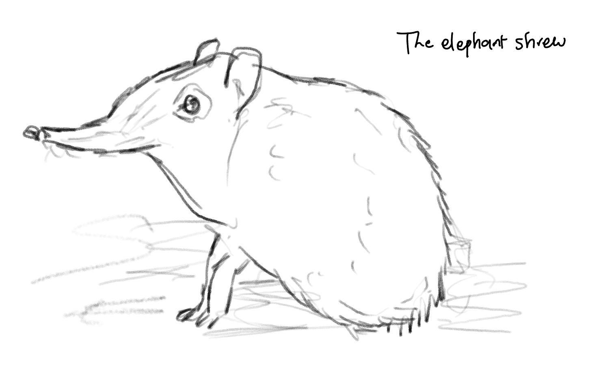
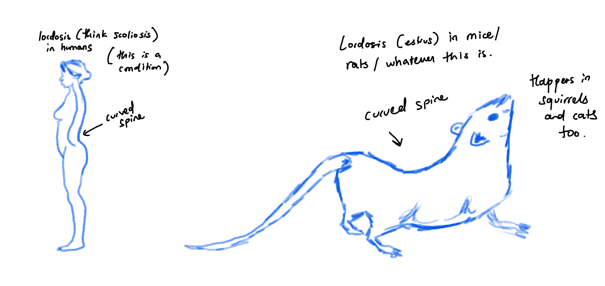
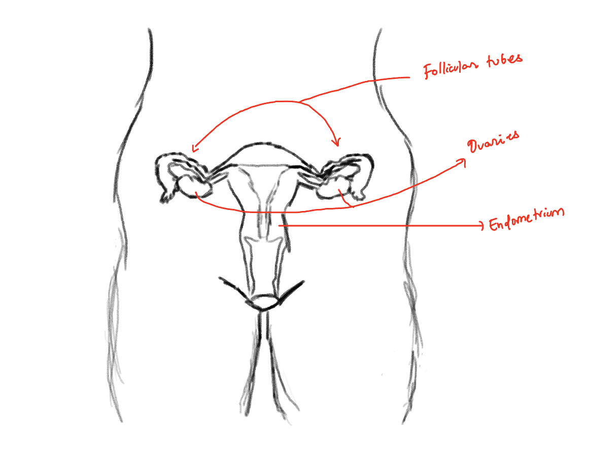
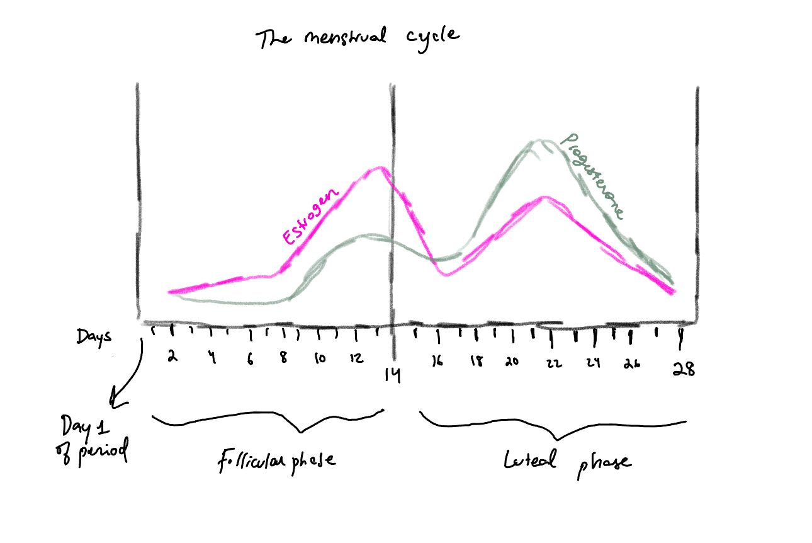

Females and cycles
3/21/24
I am yet again caffeinated and it's sunny and I’m in Doe library and I just read Sarah Hill’s book on how birth control changes your brain so we’re going to be writing about periods.
98% of mammals don’t have a period. So it’s just human women (I’ll be referring to those assigned females at birth as women throughout this), rhesus macaques, baboons, some bats, and the elephant shrew, which is not an elephant, but a tiny mouse-like thing called a shrew. They’re actually more closely related to elephants than shrews, which is baffling, but their name comes from the fact that their snouts look like an elephant’s trunk.

The other mammals in the world go through estrus, which is a phase of obvious fertility - think swollen genitalia in macaques or lordosis in squirrels where females kinda arch their back to tell the world they’re ready for copulation. We have concealed ovulation, which means there aren’t obvious signs that we’re fertile, although studies have shown that the opposite sex can pick up on ovulating women.1 “Women don’t advertise ovulation, but they do seem to leak information about it,” said Hannah Rowland from Cambridge’s Zoology department.2

I’ll go into what exactly ovulation is later on, but studies have found that ovulating women are attracted to and flirt more with traditionally masculine-looking men,3,4,5 put more effort in their appearance, and choose to wear more revealing, fashionable, and red clothing.6,7,8 Men also rate women's voice and body odor as more attractive during this time.9-14 This is kind of amazing to think about in terms of good old evolution and hidden ways humans can pick up on other human traits (for more, check out pheromones).
For other mammals, ovulation is induced. For us, it’s “spontaneous” and occurs cyclically throughout the year. Along with our periods.
So why do women have periods?
To build up to an answer, we must talk first about the endometrium. The endometrium is the inner layer or lining of the uterus. Menstruation or getting our period is the shedding of this lining. What tampons or pads collect is blood, tissue, and the endometrial lining.

The endometrial lining builds up every month in preparation for potentially becoming a home for another human. Its optimism is charming. I, and millions of other women, have been disappointing our endometriums for ages now, and yet it persists.
Here’s what I found completely fascinating about this. We humans started fighting for a chance to make it in this world right at conception. If you are here and alive today, my god, what a miracle, great job.
Birth
To be born is a feat in itself. First it starts with sperm - one sperm in particular. A healthy man produces around 200-300 million sperm every round. Once they reach inside a woman, they start swimming. It’s like a sperm iron man race except most die during the swim. Only around 200 will make it near an egg and only one - the hulk sperm - will successfully fertilize an egg in one of the follicular tubes. That’s a crazy success rate.But that doesn’t guarantee a baby. Now this fertilized egg needs to prove itself.
The first test
Sarah Hill described a woman’s womb as a battleground between the fertilized egg and the mother’s evolutionary interests. This is where the endometrium comes in - the egg needs to be strong enough to burrow through the endometrium (this is called implantation). The endometrium, funnily enough, is one of the hardest places an egg can break into. Yeah! Let that sink in! The endometrium is not really a fan of fertilized eggs! The place where an egg needs to implant itself to be born doesn’t really want it there.We know this because scientists have tried to implant mouse embryos in a bunch of other locations in the body, expecting them to die because there’s no endometrial lining to sustain them, but they found the opposite. The embryos thrived! They fucked up everything around them in these random places and fed on arteries to fuel their growth.15,16 Hill writes that the “endometrium is actually one of the hardest places to grow an embryo, since the environment is downright inhospitable to a newly fertilized egg.”(22)
There's a good reason for this filtering. The fertilized egg needs to be strong enough to break through the dense, cell-packed walls of the endometrium. If it’s not, it probably doesn’t have a shot at surviving in the real world anyway. And a female body won’t invest in a weak egg. So if it’s weak, it’s just gonna leave the woman’s body during her next period. This happens to approximately 32 percent of fertilized eggs.17
The second test
Say the fertilized egg made it through. Now it’s all about whether it’s healthy/strong enough to produce enough human chorionic gonadotropin or hCG. This chemical, also known as the pregnancy hormone, signals to the brain that “hey, we have a successful embryo down here, hold off on the shedding.” That’s why women lose their period and thus keep their endometrial lining to be a home for the egg. Approximately 24 percent of fertilized eggs don’t produce enough hCG, so they too are absorbed by a tampon or something during the woman's next period.17If there’s no fertilized egg, the woman will just shed the lining every month - the definition of a period.
But why do we shed the lining? Why do we not just reuse it like some other animals who menstruate do? Surely it’s more metabolically thrifty NOT to shed the lining every month. Blood makes you stand out to a predator which wasn’t ideal for our ancestors. And it’s also just annoying, painful, and wasteful.
I don’t have an answer to this. Hill writes the following: “Humans have periods because shedding the endometrial lining allows women to be choosy about investment in pregnancy.”(24) I’m assuming this means we shed because we want to get rid of the weak fertilized eggs. But that can’t be the only reason. I mean, it’s not like women have fertilized eggs in there every month. Why would natural selection select for human females to go through this really annoying, life-threatening (again, blood attracts predators), metabolically costly thing when we could just reuse it? This Scientific American article says we don’t know:
“It is also unclear why we shed this biological tissue so dramatically when most mammals that experience estrus appear to reabsorb their endometrial linings at the end of each cycle.”
Maybe I have to do more digging or maybe there’s just not an answer yet. I am aching to find out. But anyways, while I couldn’t establish WHY we have our period, I’ve established what it is. And it’s ridiculously important because the menstrual cycle affects pretty much every day of the month as a woman. And it’s not just “oh it’s that time of the month again” every month until menopause. NO! It’s renewal! It’s the start of a cycle that plays a role in a woman’s life every single day (assuming she’s not on birth control, which we’ll get to later).
The menstrual cycle
This part of the book changed my life. I’m so excited to write about it.Here’s the menstrual cycle. It has two phases: the follicular phase and the luteal phase.

But before that let’s talk about what hormones are.
Hormones are chemical messengers in the body - think insulin (manages blood sugar), cortisol (manages stress), and adrenaline (manages the flight-or-fight response). Sex hormones are produced in sex organs (ovaries in females and testes in males). The main ones are testosterone, estrogen, and progesterone. All three are present in men and women and have their roles, but testosterone is the dominant male sex hormone and estrogen and progesterone are the dominant female sex hormones.
The stars of this menstrual cycle show are estrogen and progesterone.
Read that again! Engrave it in your memory! Estrogen and progesterone!!!! Estrogen is hot and flirty. Progesterone is an earth mother who probably lives in Berkeley or Boulder.
Estrogen is responsible for developing and maintaining things like breasts and the reproductive system. It’s also responsible for motivating behaviors that make pregnancy possible.17
Progesterone helps coordinate nesting-related activities (think eating and sleeping) in a woman after estrogen calms down a bit. It helps prepare the body for a potential embryo growing in it and builds up the endometrial lining again.
The follicular phase
This phase is named after the sacs in our ovaries that contain eggs: follicles. Each follicle contains one egg. During this phase, some follicles begin to grow or mature, and at the end of the phase, the most mature one is dropped into the follicular tube - ovulation!The follicular phase starts with your period. Look at the chart again. When it starts, both our star sex hormones - estrogen and progesterone - are low. We’re just trying to survive given our bleeding genitalia. Around the 6th day after we start our period, the world starts looking bright again. Estrogen starts rising. We’re confident, energized, life is good, and most strikingly, our sex drive is rising along with the estrogen. This leads to our fertile window: the 5 or 6 days before ovulation and then ovulation itself. What’s ovulation?
Ovulation is the process where an ovary drops a mature egg into one of two follicular tubes in case any one of those 200-300 million sperm decide they wanna fertilize it. The egg stays in there for about 16-24 hours, although some websites say 32 hours. The end of ovulation marks the start of the luteal phase.
The luteal phase
This phase derives its name from the corpus luteum, Latin for “yellow body,” which is the follicle that releases the egg during ovulation. After the follicle is empty, it turns yellow. Hence the name.Our body, in its naive optimism, assumes that there may be a chance we have a fertilized egg in us during this time. So it creates conditions that would support the potential environment for the war the egg might be fighting down there. Women tend to eat and sleep more. Estrogen rises up again a little bit (see the peak in the luteal phase) but then dies again (I’m really productive in this phase). It is the earth mother era. But it’s important to remember that mood, libido, and behaviors vary across each individual. All of this is very general. I start eating sunflower seeds in this phase, which brings me to seed cycling.
Seed cycling
I was introduced to seed cycling through Hitomi Mochisuki’s great video.Seed cycling is basically eating pumpkin and/or flax seeds during the follicular phase and sesame and/or sunflower seeds during the luteal phase for hormonal balance. Pumpkin and flax seeds can boost estrogen because they contain lignans and omega-3 fatty acids. Sesame and sunflower seeds can boost progesterone because of the zinc, vitamin E, and selenium in them. I couldn’t find scientific evidence that it works, but even if it’s a placebo, it made me more aware of my body and its hormones.
Birth control
The pill works by suppressing ovulation and keeping hormones relatively stable as compared to the natural fluctuations seen above. What I understood from Sarah Hill’s book was that some types of pills keep one’s progesterone levels stable, which can lead to weight gain. I'm truly not sure though. Her book's the best place to look.There’s also other birth control options - IUDs inserted into the uterus. Copper IUDs are popular because copper is a natural spermicide and isn’t great for eggs either. The hormonal IUD releases a hormone called levonorgestrel into the uterus, which also hates sperm (and by hate I mean limits their ability to function), thins the endometrial lining, thickens the mucus on a cervix making it hard for sperm to get to an egg, and can suppress ovulation.
Some finishers
We’ve established that a lot of screening happens in the body for a woman to get pregnant. Makes sense; pregnancy is dangerous for human females due to their narrow hips and babies' huge heads. Plus nine months of carrying around a baby in our body is costly. I mean, the changes in one's body, the emotions of it all, the act of labor itself. Males do not have to put the same investment in reproduction, which brings us to an important distinction between men and women.The onset of birth control in the 1960s and the consequent sexual revolution created for the first time in human history a woman who could have sex without getting pregnant. Women could now be sexually opportunistic, just like the men! We could have a female equivalent to Genghis Khan. But less than a century of birth control can’t change the makeup of female brains that evolved for a muchhhhhhhh longer time than that. That is to say, nature hasn’t selected for women to be sexually opportunistic the way males can be.18-22
I’m getting this from Louise Perry's case against the sexual revolution. It’s oh so great. You may not agree with everything she argues for, I know I didn’t before I read the book, but she argues wonderfully. Women can’t reverse thousands of years of evolution to adapt to the demands of hookup culture or casual sex. Here’s a chapter of the book on the WSJ website.
Conception, life, death, evolution, female bodies, it’s all very serious and equally fascinating stuff. I've barely covered a very tiny fraction, most likely with errors. I hope you’ll excuse all the faults and generalizations in this long braindump.
Citations
1 Haselton MG, Gildersleeve K. Can men detect ovulation? Curr Dir Psychol Sci. 2011;20(2):87–922 Women’s faces get redder at ovulation, but human eyes can’t pick up on it. University of Cambridge. (2015b, June 30)
3 Jones BC, DeBruine LM, Perrett DI, Little AC, Feinberg DR, Law Smith MJ. Effects of menstrual cycle phase on face preferences. Arch Sex Behav. 2008;37(1):78–84. pmid:18193349
4 Little AC, Jones BC, Burriss RP. Preferences for masculinity in male bodies change across the menstrual cycle. Horm Behav. 2007;51(5):633–9. pmid:17466990
5 Cantú SM, Simpson JA, Griskevicius V, Weisberg YJ, Durante KM, Beal DJ. Fertile and selectively flirty: Women’s behavior toward men changes across the ovulatory cycle. Psychol Sci. 2014;25(2):431–8. pmid:24335600
6 Durante KM, Li NP, Haselton MG. Changes in women's choice of dress across the ovulatory cycle: naturalistic and laboratory task-based evidence. Pers Soc Psychol Bull. 2008;34(11):1451–60. pmid:ISI:000259969000002
7 Haselton MG, Mortezaie M, Pillsworth EG, Bleske-Rechek AL, Frederick DA. Ovulatory shifts in human female ornamentation: Near ovulation, women dress to impress. Horm Behav. 2007;51(1):40–5. pmid:17045994
8 Beall AT, Tracy JL. Women more likely to wear red or pink at peak fertility. Psychol Sci. 2013;24(9):1837–41. pmid:23842955
9 Thornhill R, Gangestad SW, Miller R, Scheyd G, McCollough JK, Franklin M. Major histocompatibility complex genes, symmetry, and body scent attractiveness in men and women (Homo sapiens). Behav Ecol. 2003;14(5):668–78. pmid:ISI:000185596600011
10 Havlíček J, Dvořáková R, Bartoš L, Flegr J. Non-advertized does not mean concealed: Body odour changes across the human menstrual cycle. Ethology. 2006;112(1):81–90
11 Kuukasjärvi S, Eriksson CJP, Koskela E, Mappes T, Nissinen K, Rantala MJ. Attractiveness of women's body odors over the menstrual cycle: the role of oral contraceptives and receiver sex. Behav Ecol. 2004;15(4):579–84
12 Pipitone RN, Gallup GG. Women's voice attractiveness varies across the menstrual cycle. Evol Hum Behav. 2008;29(4):268–74. pmid:ISI:000257025100006
13 Bryant GA, Haselton MG. Vocal cues of ovulation in human females. Biol Lett. 2009;5(1):12–5. pmid:ISI:00026259670000
14 Puts DA, Bailey DH, Cárdenas RA, Burriss RP, Welling LLM, Wheatley JR, et al. Women's attractiveness changes with estradiol and progesterone across the ovulatory cycle. Horm Behav. 2013;63(1):13–9. pmid:23159480
15 Yoshinaga K. A historical review of blastocyst implantation research. Biol Reprod. 2018 Jul 1;99(1):175-195. doi: 10.1093/biolre/ioy093. PMID: 30010858; PMCID: PMC6279068
16 Wong CC, Loewke KE, Bossert NL, Behr B, De Jonge CJ, Baer TM, Reijo Pera RA. Non-invasive imaging of human embryos before embryonic genome activation predicts development to the blastocyst stage. Nat Biotechnol. 2010 Oct;28(10):1115-21. doi: 10.1038/nbt.1686. Epub 2010 Oct 3. PMID: 20890283
17 Hill, S. E. (2019). This Is Your Brain on Birth Control: The Surprising Science of Women, Hormones, and the Law of Unintended Consequences. Penguin
18 Meskó, N., Szabó, Á., & Kiss, J. (2014). The association between mating strategies and mate retention behaviors of men and women in committed relationships. Personality and Individual Differences, 69, 219-223
19 Neto, F. (2015). Romantic jealousy: Emotions and relational consequences. Psychology, 6(11), 1359-1372
20 Puts, D. A., Pope, L. E., Hill, A. K., Cárdenas, R. A., Welling, L. L., Wheatley, J. R., & Breedlove, S. M. (2015). Fulfillment of mate preferences in the real world. Personality and Social Psychology Bulletin, 41(11), 1559-1571
21 Rammsayer, T. H., & Troche, S. J. (2013). Relationship between time perception and psychometric intelligence. Intelligence, 41(1), 101-106
22 Rammsayer, T. H., Borter, N., & Troche, S. J. (2017). Assessment of emotional reactivity across different domains of affective processing: The psychometric properties of the Mainz Affective Inventory. Psychological Reports, 120(6), 1105-1135